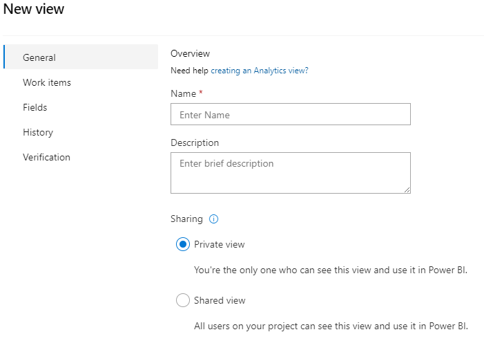

Azure DevOps Analytic Views
Yeni bir analitik görünüm oluşturmak için aşağıdaki adımları izleyebilirsiniz:
- Azure DevOps Boards'a gidin ve projenizi seçin.
- Sol taraftaki menüden "Analytics" (Analitik) bölümüne gidin.
- "Views" (Görünümler) sekmesine tıklayın.
- "New View" (Yeni Görünüm) düğmesini tıklayın.
- Açılan sayfada, yeni görünümünüz için bir ad belirleyin ve gerektiğinde açıklama ekleyin.
- "Add widget" (Widget ekle) düğmesini tıklayarak görünümünüze widget'ları ekleyin. Widget'lar, farklı analizleri temsil eden öğelerdir. Örneğin, Burndown Chart (Yakma Grafiği), Cumulative Flow Diagram (Birikimli Akış Diyagramı), Velocity Chart (Hız Grafiği) gibi.
- Her widget için ilgili konfigürasyonları yapın. Örneğin, grafik türü, veri kaynağı, filtreler, sütunlar vb.
- Widget'ları düzenlemek, yeniden boyutlandırmak veya kaldırmak için ilgili seçenekleri kullanın.
- Görünümünüzü kaydedin ve istediğiniz zaman erişmek için adını ve açıklamasını kaydedin.
Yeni analitik görünümünüz artık kullanıma hazır olacak ve projenizin analizini daha fazla özelleştirme imkanı sunacak. Bu özelleştirilmiş görünümler, proje yönetimi, performans izleme ve süreç iyileştirmeleri için daha fazla esneklik sağlar.
